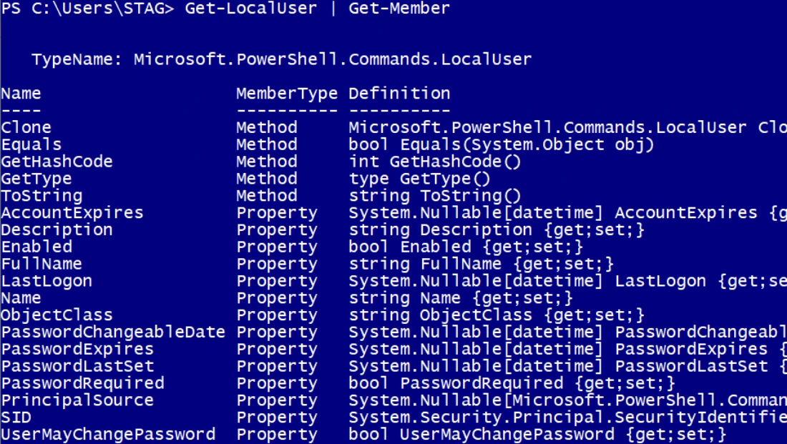
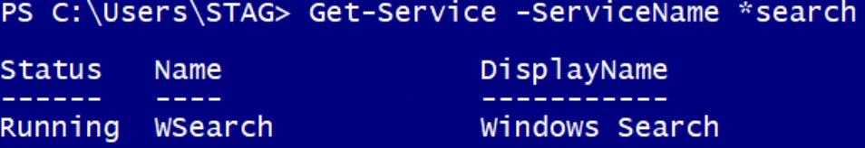
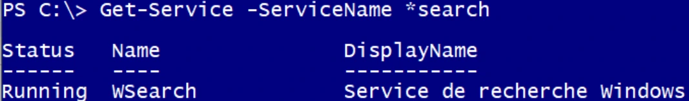

Transcription du support du Drive. Les formulations historiques et les exemples du document sont conservés. Les valeurs d’accès du laboratoire sont indiquées comme « fourni par le formateur ». Les adresses de messagerie personnelles utilisent example.com.
Démonstration 02 du module 2
L’objectif de cette démonstration est de vous présenter les propriétés.
Chaque objet PowerShell contient des propriétés. La liste de ses propriétés est définie par le type d’objet auquel il appartient.
La propriété Description est de type String ; elle n’accepte donc que les chaînes de caractères.
La propriété PasswordRequired est type Bool ; elle n’accepte que les valeurs de type booléen.
Pour modifier les valeurs d’une propriété, on va dans un premier temps choisir l’objet sur lequel on souhaite modifier la valeur de la propriété.
Get-LocalUser | Get-Member
On indique à la commande Get-Service que l’on souhaite uniquement les services contenant search en fin de nom de service.
On obtient la valeur de la propriété DisplayName ici Windows Search.
Pour modifier la valeur, il faut disposer de l’objet de la propriété et de la valeur. On utilise en suite la commande permettant de modifier les valeurs de propriété de l’objet Service.
La commande Set-Service est associée au nom de l’objet service puis à la propriété à modifier et enfin à la valeur de la propriété souhaitée.
La propriété DisplayName est de type String ; nous lui indiquons donc une chaîne de caractères encadrée par les symboles ‘’ ou double quote.
La commande L’objet La propriété La valeur de type « String »
On vérifie la bonne prise en compte de la modification.
La modification d’un objet système nécessite une console avec les droits d’administration
Get-Service -ServiceName *search
Set-Service -ServiceName Wsearch -DisplayName "Service de recherche windows"
Get-Service -ServiceName *search
